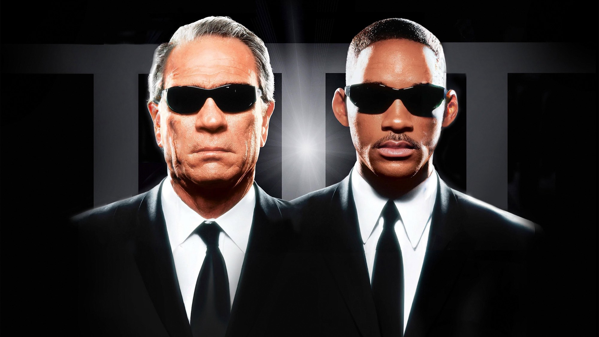
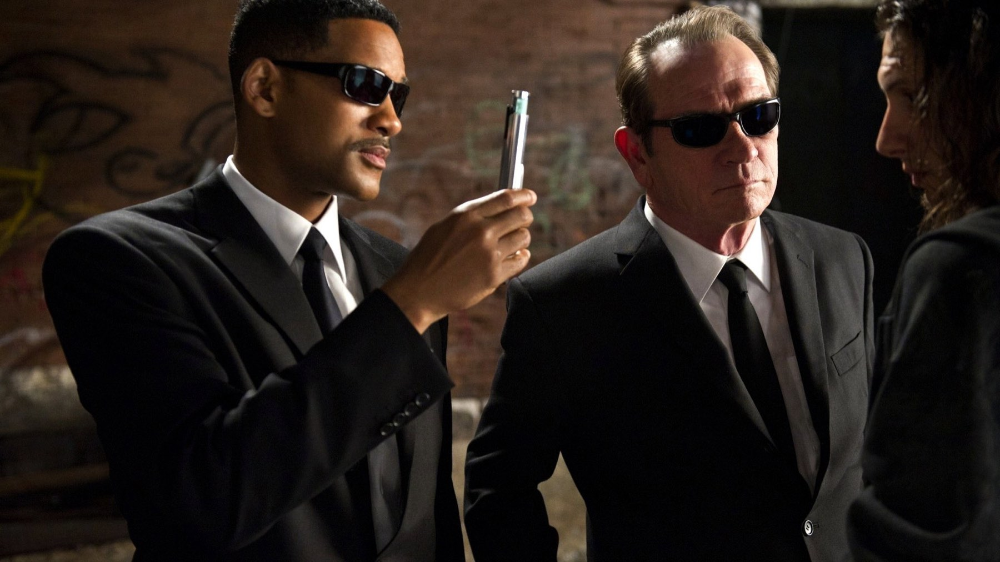
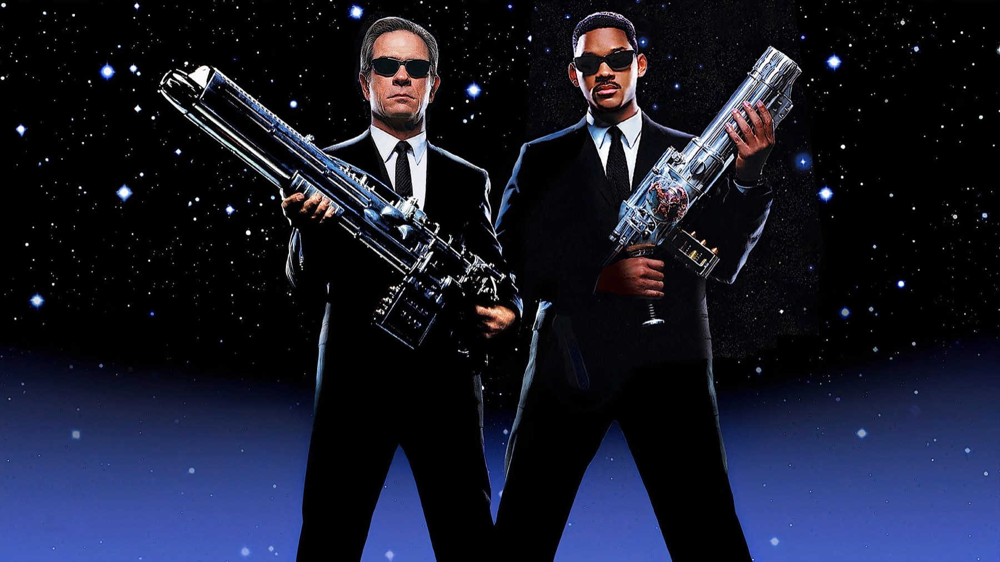

Men in Black: 6 curiosità, da O'Donnell a Will Smith
Il ruolo di J, un fumetto cupo e un trucco da Oscar: come nacque il classico del 1997
Il James Edwards del film supera una serie di prove, e subito dopo la sua vecchia identità sparisce dai registri pubblici: nasce l'agente J. Oggi sembra un ruolo scritto su misura per Will Smith, ma Men in Black, uscito in Italia il 3 ottobre 1997, ebbe una strada molto meno lineare. Ecco sei retroscena che vanno dal casting ai conti dello studio.
Will Smith arrivò dopo Chris O'Donnell
Per il ruolo di J, una parte della produzione voleva Chris O'Donnell, reduce da Batman Forever. Il ruolo però andò a Will Smith, e il regista Barry Sonnenfeld ha avuto un motivo preciso per volerlo: sua moglie era fan di Willy, il principe di Bel-Air, e lui aveva apprezzato l'attore in Six Degrees of Separation. Sonnenfeld era stato chiamato nel 1996 da Steven Spielberg e veniva da La famiglia Addams, quindi sapeva già come far convivere ironia e mostri. La scelta pesa più di quanto si pensi, perché J è il nostro punto di vista: se lo spettatore ride con lui, il film regge anche quando l'azione cala.

Nel fumetto Jay era biondo
Il film nasce da The Men in Black, serie ideata da Lowell Cunningham, con i disegni di Sandy Carruthers. Uscì con Aircel Comics, poi con Malibu, che Marvel comprò nel 1994: tre capitoli nel 1990 e altri tre nel 1991. Le differenze sono grandi, ma la più forte riguarda il tono. Nel fumetto Jay è un uomo biondo, mentre Zed non si vede mai e l'organizzazione si occupa soltanto di alieni, in un clima desolato. Il cinema tolse quasi tutto questo e lo sostituì con la commedia, perciò il Jay di Smith è un'invenzione del film, non un adattamento.
Rick Baker fece più bozzetti di tutta la carriera
Il truccatore Rick Baker, chiamato per gli alieni di gomma e animatronici, definì Men in Black la produzione più complessa della sua carriera: servirono più bozzetti che in tutti i suoi film precedenti messi insieme, e ogni creatura doveva piacere sia a Sonnenfeld sia a Spielberg. Il Bug animatronico fu però sostituito da uno in computer grafica, più simile a uno scarafaggio, e la sequenza costò altri 4,5 milioni di dollari. Il lavoro valse a Baker e a David LeRoy Anderson l'Oscar per il miglior trucco. Si capisce guardando le facce del film: gli alieni hanno un'espressione precisa, e questo ci fa credere alla gag anche quando è assurda.

Gli occhiali triplicarono le vendite
Le lenti scure degli agenti sono dei Ray-Ban Predator 2, e nel mondo del film servono a deviare i neuralyzer. Fuori dallo schermo ebbero però un effetto concreto: le vendite triplicarono, fino a 5 milioni di dollari. È quindi un buon esempio di come un dettaglio di costume diventi il segno riconoscibile di un titolo: bastano un completo nero e un paio di lenti scure per capire di chi si parla, anche da lontano.
Una canzone per partire, e conti da leggere con cautela
Nel 1996 Smith era nel cast di Independence Day, allora secondo incasso della storia. L'estate dopo, con la canzone Men in Black, iniziò la carriera da solista: primo posto nel Regno Unito e poi l'album Big Willie Style. Il film costò 90 milioni di dollari, ma incassò nel mondo circa 589 milioni, con 51,1 milioni al primo weekend. Eppure lo sceneggiatore Ed Solomon ha riferito che Sony sostiene che non abbia mai generato profitto, secondo la contabilità tipica di Hollywood. Resta un promemoria utile, perché un successo da cassetta non dice tutto di quello che resta in tasca allo studio.
In italiano, K è Dario Penne e J è Sandro Acerbo
Il doppiaggio italiano fu diretto da Manlio De Angelis, i dialoghi sono di Marco Mete e la società è la SEFIT-CDC. K ha la voce di Dario Penne, J quella di Sandro Acerbo, Laurel di Pinella Dragani, mentre De Angelis stesso doppia Edgar. Nel trailer, però, J aveva un'altra voce: Simone Mori. Chi rivede oggi il film in italiano ascolta quindi un attore diverso da quello del trailer, e il ritmo di scambi secchi è merito anche di chi l'ha adattata.
Se i retroscena vi incuriosiscono, leggete anche Pirati dei Caraibi, sul pirata nato da un chitarrista rock, Full Metal Jacket, sull'istruttore che scrisse da solo i suoi dialoghi, e Shrek, sulle frasi che da bambini non capivamo.
Men in Black funziona perché ha preso un fumetto cupo e lo ha affidato a un attore diverso dal previsto: la leggerezza di Smith è ciò che lo rende ancora guardabile, perciò vale la pena di rivederlo su Disney Plus. Quale di questi retroscena non conoscevate?
Domande frequenti
Men in Black è tratto da un fumetto?
Sì: dalla serie The Men in Black di Lowell Cunningham, disegnata da Sandy Carruthers, uscita tra il 1990 e il 1991.
Chi voleva Chris O'Donnell nel film?
Una parte della produzione lo preferiva per il ruolo di J; il ruolo andò poi a Will Smith.
Chi doppia J e K in italiano?
J ha la voce di Sandro Acerbo e K quella di Dario Penne.
Dove si vede Men in Black in Italia?
Su Disney Plus, con abbonamento; è disponibile anche a noleggio.